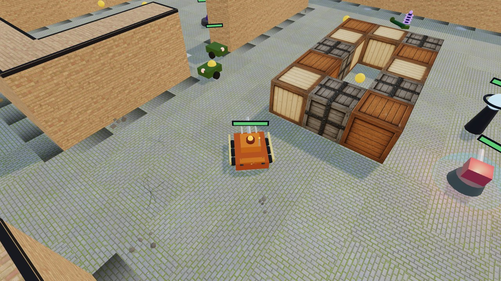

✳ POCKET CAMPAIGN / 01
NUCLEAR
TANK
MOBILE
Ten missions. One thumb.
You drive. Your tank does the fighting.
Your next stop.
10 handpicked missions

Ten missions. One thumb.
You drive. Your tank does the fighting.
10 handpicked missions
Turn your phone to portrait.
One hand on the phone. One thumb on the tank.